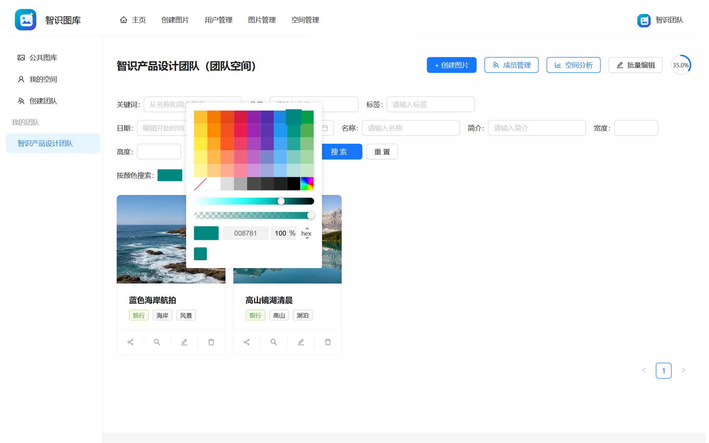
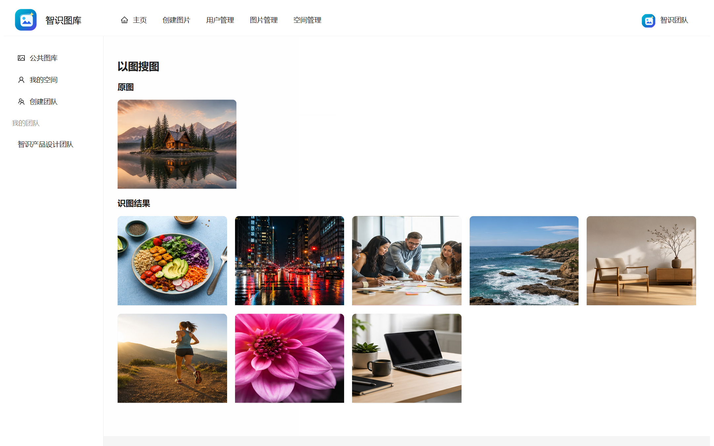
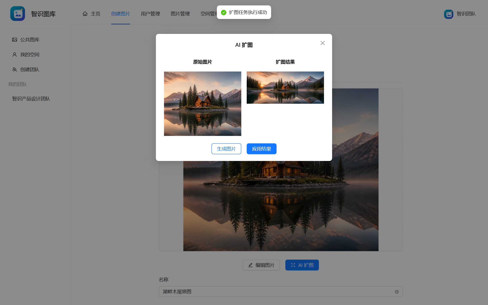
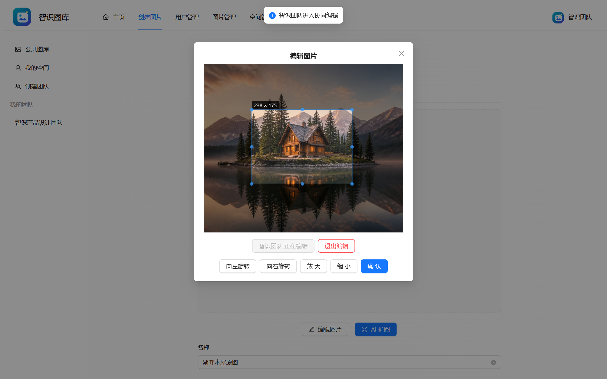

↥
统一上传模板 + 腾讯云 COS
文件上传与 URL 上传复用模板方法流程，统一校验、对象存储、图片元信息提取与结果封装；支持单张、批量抓取和缩略图资源清理。
Template Method · Object Storage项目不是孤立功能的堆叠，而是以“空间”为业务边界，把图片、成员、权限、容量、分析与协同组织到同一套领域模型中。
公共图库承接浏览与审核，私有空间服务个人资产，团队空间通过成员角色支持协作；同一张图片在不同空间下进入不同的鉴权路径。
公开浏览、上传审核、管理员治理
个人资产、容量配额、独立管理
角色权限、成员管理、实时协同
把简历里的技术关键词落到用户真正能感知的产品能力上。
文件上传与 URL 上传复用模板方法流程，统一校验、对象存储、图片元信息提取与结果封装；支持单张、批量抓取和缩略图资源清理。
Template Method · Object Storage以图搜图通过门面统一编排页面地址获取、HTML 解析与结果拉取；颜色搜索把图片主色映射到 RGB 空间，按欧氏距离计算相似度并返回 Top 12。
Facade · Color Similarity接入阿里云异步任务接口，创建扩图任务后轮询状态，将生成式图像能力嵌入原有图片编辑流程。
从容量用量、分类、标签、尺寸、成员贡献和空间排行六个视角理解资产结构与使用情况。
公共图片包含待审核、通过、拒绝状态；管理员可以批量导入、编辑与审核，形成平台治理入口。
保留 Caffeine → Redis → DB 双层缓存实验路径，以随机 TTL 抖动缓解雪崩；按空间 ID 实现 ShardingSphere 自定义分片算法。
WebSocket 负责长连接，Disruptor 把网络入口与事件处理解耦，图片维度的会话集合完成定向广播。
进入编辑 / 旋转 / 缩放 / 退出编辑
会话中解析 user 与 pictureId
生产者快速入队，工作处理器消费
每张图片同一时刻仅一个编辑者
排除当前客户端，避免重复执行
按 pictureId 维护编辑者与在线会话，连接断开时同步清理。
ENTER_EDIT、EDIT_ACTION、EXIT_EDIT 三类消息进入统一消费分发。
编辑者本地已执行动作，只向其余客户端推送，避免同一操作重复应用。
以下截图来自项目 Vue + Ant Design Vue 业务前端的实际运行页面。截图时通过 Playwright 为未启动的后端接口注入本地测试数据，并在浏览器展示层替换了原模板品牌文案；页面组件、路由、样式与交互均来自项目原前端。

点击查看大图 ↗
点击查看大图 ↗
点击查看大图 ↗
点击查看大图 ↗技术选择服务于对象存储、权限、实时协作、检索与数据扩展，而不是简单罗列依赖。
Java 11Spring Boot 2.7.6Spring MVCSpring AOPMySQL 8MyBatis-Plus 3.5.9腾讯云 COSSa-Token 1.39Redis Session空间级 RBACWebSocketLMAX DisruptorConcurrentHashMapCaffeineRedisShardingSphere 5.2阿里云 AI 扩图Jsoup颜色相似度以图搜图